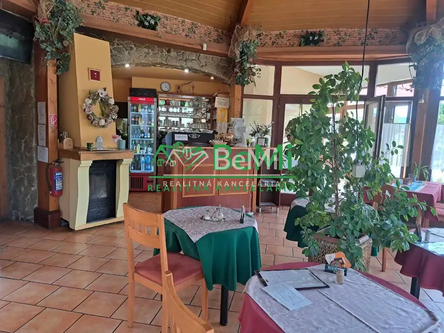
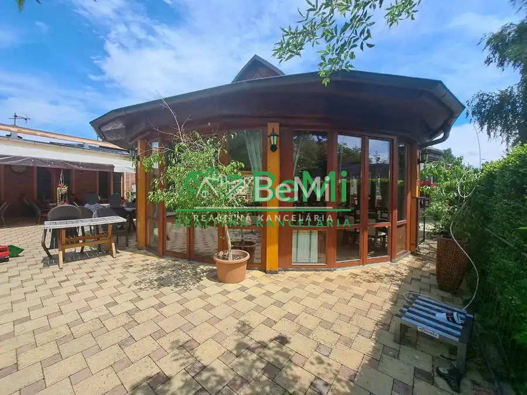
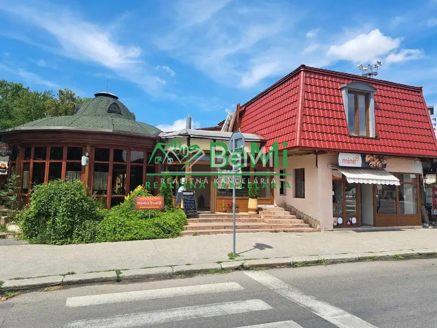
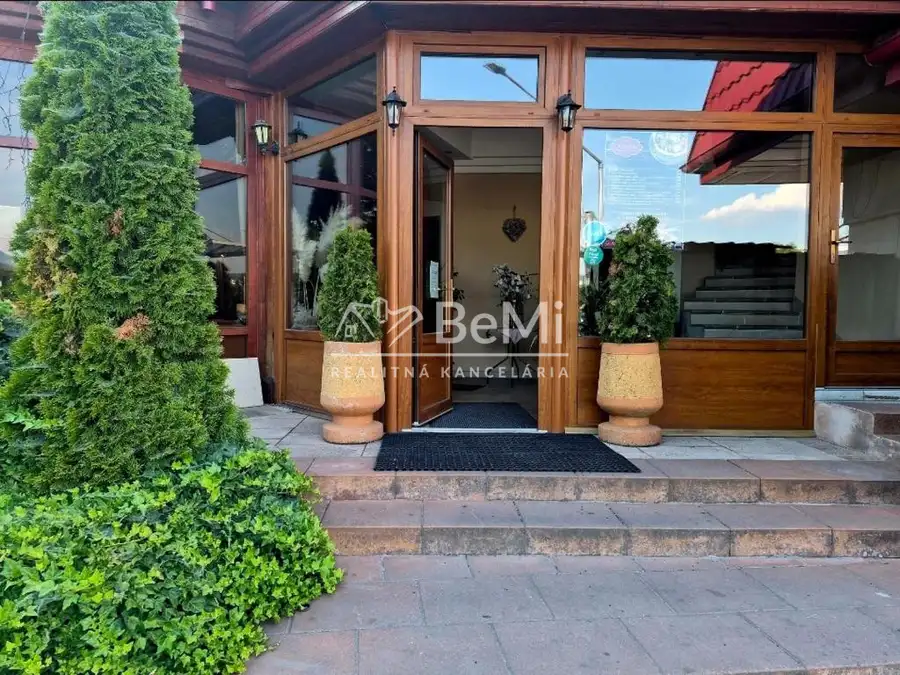
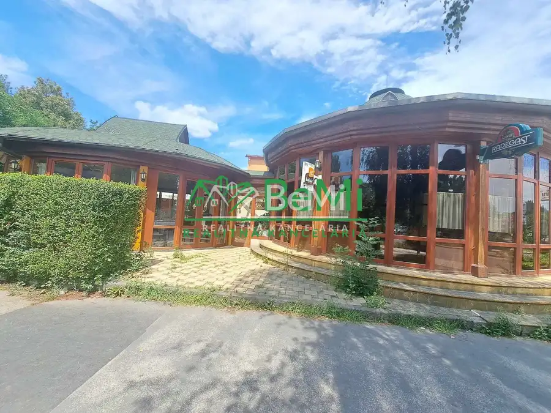
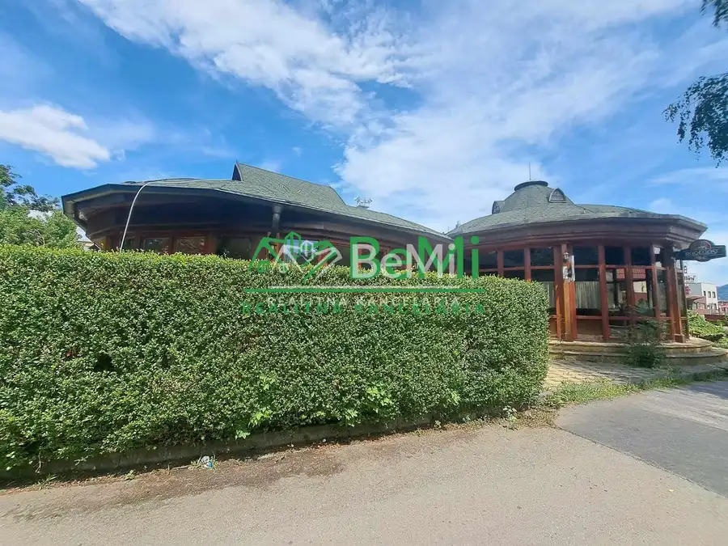

Predaj Reštauračné priestory vhodné aj na iné podnikanie
Trenčín






- Plocha250 m²
- StavKompletná rekonštrukcia
- VlastníctvoOsobné
O nehnuteľnosti
148-18-MACHOZLATÁ PRÍLEŽITOSŤ! REŠTAURÁCIA ROTUNDA, PENZIÓN A OBCHODNÝ PRIESTOR V TRENČÍNE NA PREDAJ Ponúkame Vám jedinečnú možnosť získať skvostný podnik v Trenčíne. Na predaj alebo dlhodobý prenájom je dostupná Reštaurácia Rotunda spolu s Penziónom a Obchodným priestorom. S výmerou pozemku 1250 m2 a perfektnou polohou pri stanici, táto nehnuteľnosť je poklad pre podnikateľov.Čo Vás čaká:Predajnička s Fornetami, Vydajové automaty, Pizzeria veľmi oblúbená Uznávaná reštaurácia s bohatou históriou a zavedenou klientelou, ktorá poskytuje jedinečnú atmosféru a lahodné gastronomické zážitky.2 hlavné budovy so všetkým potrebným vybavením na prípravu a servis jedál, priestormi pre personál a príjemným prostredím pre hostí.Pohodlný Penzión s 5-timi izbami a jedným apartmanos s ve%lkou terasou. S nádychom elegancie, ponúkajúci štýlové izby a výborné možnosti pre rozšírenie podnikania o ubytovacie služby.Nenahraditeľná lokalita pri stanici v Trenčíne, poskytujúca výbornú dostupnosť a blízkosť k hlavným miestnym atrakciám.Táto nehnuteľnosť je skvelou príležitosťou pre všetkých podnikateľov v pohostinstve, cestovnom ruchu alebo obchode. Jej mnohostranné využitie poskytuje obrovský potenciál pre rast a úspech.Možnosti:Predaj aj po častiach cena restaurácie 490000€Predaj ako celok 960000 €Cena je o dohode Veľmi dobrá voľbaNeváhajte a okamžite nás kontaktujte, ak máte záujem o túto zriedkavú príležitosť. Radi Vám poskytneme podrobnejšie informácie a zorganizujeme prehliadku objektu.Kontakt:Telefón: 0908/779 940E-mail: cholvadova@realitybemi.skNepremeškajte šancu stať sa majiteľom a prevádzkovateľom úspešného pohostinského podniku na prestížnom mieste v Trenčíne, kde je teraz naozaj rušno
Parametre
- Druh
- Reštauračné priestory
- Dátum zverejnenia
- 03. 09. 2025
- Plocha terasy v m2
- 70 m²
- Stav nehnuteľnosti
- Kompletná rekonštrukcia
- Typ
- Predaj
- Vlastníctvo
- Osobné
- Vybavenie
- Terasa, Garáž
- Úžitková plocha
- 250 m²